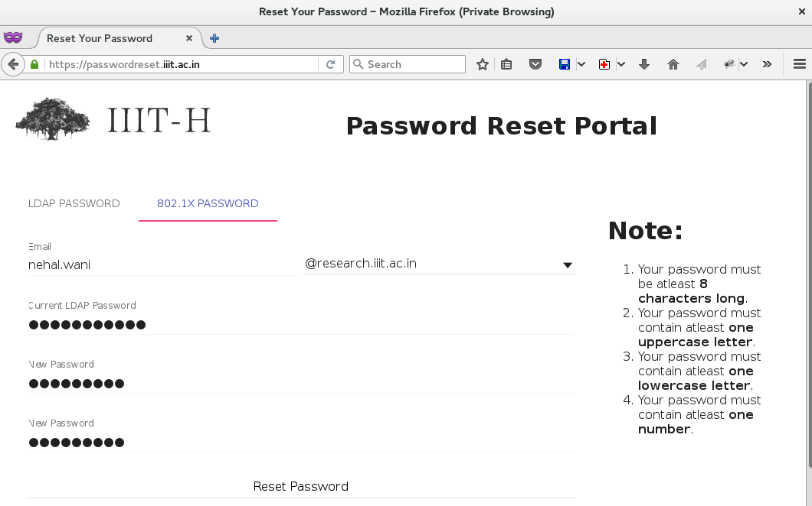

Configure 802.1x Authentication based on various operating systems
In order to be able to authenticate yourself, you'll need to generate a 802.1x authentication password at https://passwordreset.iiit.ac.in. Please note that this is just an extra authentication token which you will have to generate to authenticate yourself for using network resources. This is one time only. In case you forget the generated password, you can set it again by visiting the above link. Use your students/research password in the field "Current LDAP password:" and set a new password for network connectivity. Please note that this is not going to affect your current password that you use to log into portals, etc.
Visit: http://passwordreset.iiit.ac.in and set your 802.1X password. You have to authenticate yourself using your LDAP password (the one which you use at login.iiit.ac.in, research.iiit.ac.in, etc).

Intern students
They need not to generate anything, the credentials which are created itself used for 802.1x authentication
Configure Ubuntu for 802.1x Authentication
Right Click on Network icon on the top bar [ If it isn't there then try running "nm-applet" command on terminal.] If it doesn't shows anything then, you might have to install Network Manager Applet or equivalent, refer https://wiki.gnome.org/Projects/NetworkManager
Go to Edit Connections.
In section "Wired" click on "Add" tab.
Give Connection name as "Hostel Authentication", check the "Connect Automatically" checkbox.
Click on 802.1 X Security tab, check the checkbox for "Use 802.1X security for this connection.
Select Authentication type as PEAP (MSCHAPv2) and then enter your complete students/research email address and use the password generated using the portal given above.
In the security tab, enable 802.1x and then follow from Step 6 onwards as mentioned above.
If, every time every time you boot up, and it is asks for the 802.1x password, one can do the following:
Go to /etc/sysconfig/network-scripts/
Open the file `ifcfg-<interface name>`. The <interface-name> for the wired connection is mostly of the form 'enp5s0' or 'enp10s0'
In that file, remove the line `IEEE_8021X_PASSWORD_FLAGS=user` and add the line `IEEE_802.1X_PASSWORD=<your password>`. The password should be without quotes.
Reboot.
This method has been tested on Fedora22
Configure Windows for 802.1x Authentication
Open explorer, right click on computer and click 'Manage'
Navigate to 'Services and Applications', open 'Services'
Open Wired AutoConfig, set the startup type to 'Automatic' and click on 'Start'
Go to 'Network and Sharing Center' and click on 'Change adapter settings'.
For your network adapter, right click, go to properties.
Select the tab Authentication. Make sure 'Enable IEEE 802.1X authentication' is ticked. network authentication method should be 'Microsoft: Protected PEAP'
The authentication mechanism should be 'EAP-MSCHAPv2'. Click on Configure and make sure that 'Automatically use my Windows logon name and password' is not ticked. Click OK.
Go to 'Additional Settings', under 'Specify authentication mode' select user authentication.
This is optional. Click on Save Credentials and enter your email id and LAN authentication password.
Click OK.
Disable and re-enable your Network Adapter.
Configure Mac OS X for 802.1x Authentication
Mac OS X should automatically detect 802.1x and display pop up window asking username and password. Just use your IIIT email and **802.1x password** for the same.
If for some reasons (like you are in KCIS) it don't show you pop up box, then use following steps:
{kind=link}